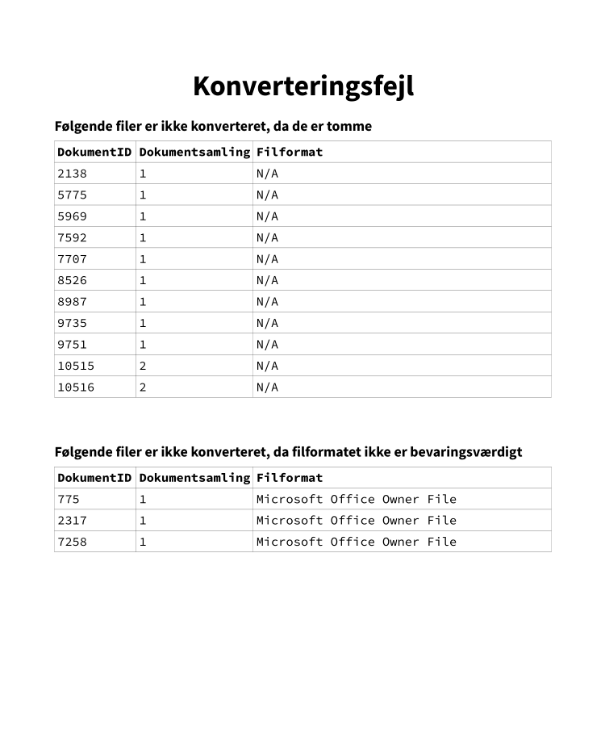

Convertool¶
Convertool er en CLI (Command-Line Interface), som benyttes til at konvertere filer, således de overholder Aarhus Stadsarkivs arkiveringskrav. Der læses fra DB-filen produceret af Digiarch.
Installation¶
Convertool skal installeres via releases på GitHub. Download først den seneste .whl-fil, og installér herefter denne via pip.
Eksempel
pip install --user C:\Downloads\convertool-0.3.5-py3-none-any.whl
Bemærk
Installation via .whl-filer kræver, at pakken wheel er installeret. Dette skal kun foregå første gang man har behov for at installere wheels, og det gøres som følger.
pip install --user wheel
Når Convertool skal opdateres, bruges igen pip med en ny .whl-fil og --upgrade.
Eksempel
pip install --user --upgrade C:\Downloads\convertool-[new version]-py3-none-any.whl
Forudsætninger¶
Convertool gør brug af Ghostscript og LibreOffice, og det er derfor vigtigt at sikre sig, at disse er installeret som beskrevet i de respektive guides.
Bemærk
Det er især vigtigt, at de relevante Ghostscript- og LibreOffice-foldere eksisterer i brugerens PATH-miljøvariabel. Vær derfor ekstra opmærksom på, at disse trin i installationen er udført korrekt.
Opbygning¶
Convertool er en CLI, og skal derfor benyttes direkte i for eksempel PowerShell. CLI'en er opbygget som følger.
convertool [OPTIONS] [ARGS] [COMMAND]
Argumenter, optioner, og kommandoer er beskrevet i det følgende.
Argumenter¶
Convertool har to inputargumenter, som begge er påkrævede: FILES og OUTDIR. FILES skal angive stien til den files.db fil, der tidligere i processen er genereret af Digiarch, mens OUTDIR skal angive stien, hvori de konverterede filer skal gemmes.
Eksempel
convertool D:\filer\AVID.AARS.3.1\_metadata\files.db D:\filer\out [COMMAND]
Convertool genererer selv en mappe baseret på AARS-ID'et, og det er derfor kun nødvendigt at angive en overordnet folder i OUTDIR.
Optioner¶
Convertool har tre optioner, der, som navnet antyder, ikke er påkrævede:
--thresholdangiver det maksimale antal fejl, der må ske under konvertering--helpprinter hjælp--versionprinter versionen af Convertool
--threshold kan bruges, hvis man ønsker, at Convertool accepterer et andet antal fejl end standardværdien. Standardværdien udregnes som kvadratroden af det totale antal filer. Hvis få filer konverteres, kan det være fordelagtigt at sætte --threshold til 0, da konvertering så stopper, første gang en fejl hænder. Det er dog ikke anbefalet for større mængder filer.
Eksempel
convertool --threshold=0 D:\filer\AVID.AARS.3.1\_metadata\files.db D:\filer\out [COMMAND]
--help og --version kan som de eneste kaldes uden at angive argumenter, da de blot giver information om selve CLI'en.
Eksempel
convertool --help
convertool --version
Kommandoer¶
Convertool har pt. én kommando kaldet main. Denne kommando konverterer filer til Aarhus Stadsarkivs prædefinerede Master-formater. Disse er blandt andre Open Document Text for alle Word-lignende filer, PDF/A for PDF-filer, og TIFF for billedfiler.
Eksempel
convertool D:\filer\AVID.AARS.3.1\_metadata\files.db D:\filer\out main
I fremtiden skal Convertool også kunne håndtere konvertering af alle Master-filer til arkiveringsformater, således der kan genereres juridiske afleveringer. Dette bør være en separat kommando.
Konvertering¶
Når Convertool sættes i gang med at konvertere, er der ikke umiddelbart behov for yderligere brugerinput. Konvertering tager i gennemsnit 2s/fil, og det kan derfor være fordelagtigt at have processen kørende i baggrunden, mens man tager sig af andre opgaver.
Bemærk
Convertool gør meget brug af LibreOffices CLI. Det er ikke testet, hvorvidt brug af LibreOffice samtidig med konvertering kan foregå uden problemer. Vær derfor forsigtig, hvis LibreOffice skal benyttes sideløbende med konvertering.
Under konvertering skriver Convertool til tabellen _ConvertedFiles i den files.db, som Convertool læser fra. I files.db laves også et såkaldt view, _NotConverted, der på brugervenlig vis angiver de filer, der endnu ikke er konverteret. _ConvertedFiles-tabellen ser ud som følger.
_ConvertedFiles
| column | required | type | description |
|---|---|---|---|
| file_id | true | int |
Fremmednøgle til Files-tabellen |
| uuid | true | str |
Universally Unique ID 4 |
_NotConverted-viewet baserer sig på _ConvertedFiles og Files. Det ser ud som følger.
_NotConverted
| column | required | type | description |
|---|---|---|---|
| id | true | int |
ID fra Files-tabellen |
| uuid | true | str |
Universally Unique ID 4 |
| path | true | str |
Fuld sti til filen |
| aars_path | true | str |
Sti med rod i AARS-mappen |
| puid | false | str |
PRONOM ID |
| signature | false | str |
Filsignatur |
| warning | false | str |
Advarsel, hvis relevant |
I afsnittet om fejlrettelser beskrives det, hvorledes _ConvertedFiles manuelt opdateres, hvis der er behov herfor.
Under konvertering skrives også til en logfil, convertool.log, der kan findes i _metadata folderen under OUTDIR\AARS-ID.
Eksempel
Antag, at originalfilerne D:\filer\AVID.AARS.3.1 bliver konverteret som følger.
convertool D:\filer\AVID.AARS.3.1\_metadata\files.db D:\filer\out main
_ConvertedFiles og _NotConverted kan nu findes i databasefilen D:\filer\AVID.AARS.3.1\_metadata\files.db, mens logfilen kan findes i mappen D:\filer\out\AVID.AARS.3.1\_metadata.
Fejlrettelser¶
Under konvertering kan forskellige fejl opstå. Disse vil typisk ikke stoppe et konverteringsjob, med mindre antallet af fejl overskrider det tilladte. Fejl opdages ved at kigge i convertool.log-filen, hvori de vil stå som WARNING. Når et job er afsluttet, skrives også en oversigt over antallet af fejl til sidst i log-filen.
Eksempel
I det følgende ses et uddrag af en convertool.log-fil. Succesfuld konvertering angives med INFO, fejl angives med WARNING, og til slut ses en oversigt over antal fejl.
2021-02-25 19:25:48 INFO: Starting conversion of file.pdf
2021-02-25 19:25:55 INFO: Converted file.pdf successfully.
2021-02-26 09:19:36 WARNING: Failed to convert file.tif: Failed to save file.tif as TIF with error: Error setting from dictionary
2021-02-25 19:25:55 INFO: Finished conversion of 11438 files with 15 issues, 7 of which were critical.
Der skelnes mellem kritiske og ikke-kritiske fejl. Ikke-kritiske fejl er typisk timeouts fra LibreOffice -- disse indikerer, at LibreOffice ikke havde tid nok til at konvertere filen, men at filen med al sandsynlighed er velformet, og kan konverteres manuelt. Nogle gange er det også fordelagtigt at give LibreOffice en chance mere, ved at køre konverteringsjobbet igen.
Når filer konverteres manuelt, er det vigtigt at opdatere _ConvertedFiles-tabellen, således man bevarer oversigten over, hvilke filer der er konverterede. Dette gøres ved at indsætte den manuelt konverterede fils ID og UUID, som vist i følgende eksempel.
Eksempel
Antag, at en fil med ID 144 og UUID cd61494b-4547-43e7-97c6-adbafc6e8bd ikke er konverteret. Den fremgår i _NotConverted som følger.
| id | uuid | path | aars_path | puid | signature | warning |
|---|---|---|---|---|---|---|
| 144 | cd61494b-4547-43e7-97c6-adbafc6e8bd | D:\files\AARS.TEST\file.tif | AARS.TEST\file.tif | fmt/353 | Tagged Image File Format |
Filen konverteres nu manuelt, og _ConvertedFiles opdateres med følgende SQL-statement.
INSERT INTO _ConvertedFiles VALUES (144, "cd61494b-4547-43e7-97c6-adbafc6e8bd")
Herefter fremgår filen ikke længere i _NotConverted-viewet.
Til tider kan filer ikke konverteres, fordi de viser sig at være korrupte eller på anden vis fejlbehæftede. Alle filer, der ikke kan eller skal konverteres, skal noteres i et dokument kaldet "Konverteringsfejl", og herudover skal en TIFF-fil, der forklarer den specifikke fejl, bruges som erstatning for den konverterede fil. Disse erstatningsfiler kan findes her. Til slut skal dette dokument gemmes som TIFF og fremgå i kontekstdokumentationen. Skabelonen til dokumentet kan findes her.
Eksempel
Dokumentet "Konverteringsfejl" kan se ud som følger.

Arbejdsgang¶
Som opsummering kommer her en oversigt over arbejdsgangen med Convertool.
- Åbn PowerShell
- Skriv
cd sti\til\dataf.eks.cd E:\batch_7\AVID.AARS.61.1 - Kør
convertool .\_metadata\files.db OUTDIR main, hvorOUTDIRf.eks. erE:\batch_7\out - Tjek fildatabasen
- Tjek logfilen i
_metadata\convertool.logforWARNINGs. Ved ikke-kritiske fejl som f.eks. timeout køres convertool igen som i trin 3. - Tjek database og logfil igen. Referér til eksemplet i fejlrettelser, hvis der skal laves manuelle rettelser.
- Hvis der er filer, som ikke kan konverteres, skal dette noteres i dokumentet "Konverteringsfejl", som beskrevet i fejlrettelser.